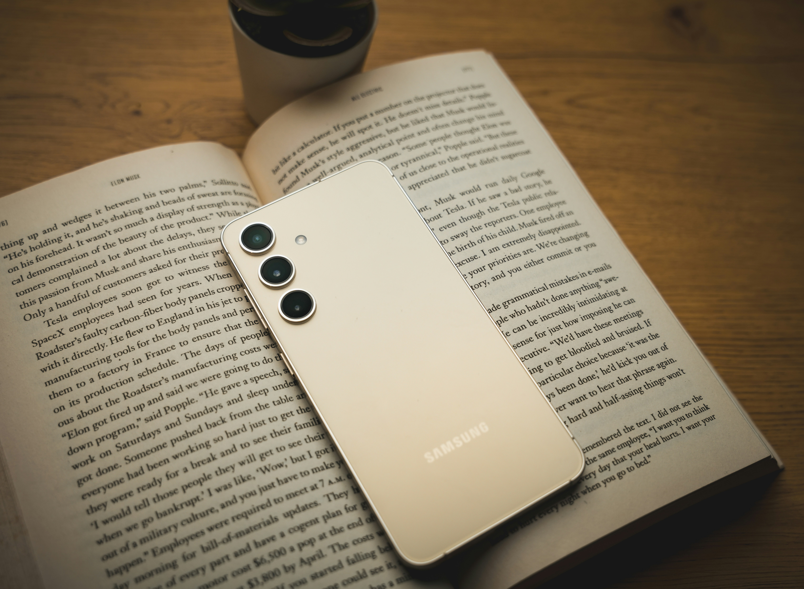

Samsung la marque qui allie innovation et excellence
L’ascension du géant technologique Sud-coréen :

Samsung est une entreprise multinationale sud-coréenne fondée en 1938 par Lee Byung-chul.
À l’origine c’était une société d’import-export dans l’alimentaire.
Elle s’est aujourd’hui diversifiée et est devenu un groupe qui comporte plusieurs filiales, dans différents domaines.
Elle est actuellement sous la direction de Han Jong-Hee et continue d’accomplir des exploits et repousser ses limites avec son slogan « Do what you can’t do ».
Elle représente 20% du PIB coréen et 20,8% de part de marché dans la téléphonie. Samsung est depuis toujours en rivalité avec Apple.
Par exemple en 2024 selon « Les Echos investir » : « la marque à la pomme aurait distribué 50,1 millions d’iPhone,
[…] ce qui lui confère une part du marché mondial de 17,3%, quand Samsung, […] peut se targuer de détenir 20,8% des parts de marché. »
Innovation et Diversification : Les Activités Clés de Samsung
Samsung est une marque qui se compose de plusieurs filiales avec une large gamme de produits et de services,
dans différents secteurs. De nos jours c’est le plus grand vendeur de smartphone au monde et de tablette en Europe notamment grâce à ses modèles « Samsung Galaxy ».
Mais la marque ne s’arrête pas qu’au numérique et propose ses services dans le bâtiment, les constructions navales,
les assurances (plus grande assurance en Corée du sud) et bien plus encore. Le marché cible de Samsung est global,
il touche aussi bien les particuliers que les entreprises. Samsung est reconnu pour ses produits haut de gamme et maintient une forte compétitivité,
ce qui lui permet de garder sa place de leader dans le monde.
Samsung : Une Entreprise Innovante au Service de la Technologie et de l’Environnement
Samsung se dit être une entreprise « qui vise à développer les technologies […] grâce à un esprit d’intelligence et d’innovation continue » (Samsung),
comme par exemple la « GDDR7 » qui est selon « Phoneandroid » : « la mémoire la plus rapide au monde ».
Tout en repoussant constamment les limites de l’innovation, Samsung s’engage selon « Samsung newsroom » :
le 15 septembre 2022 à « réduire ses émissions de CO2 à zéro nette d’ici 2050 »,
à couvrir « l’intégralité des besoins en électricité de tous les sites internationaux hors Corée,
grâce aux énergies renouvelables au cours des cinq prochaines années » et développer « de nouvelles technologies de captage […] du CO2,
de purification de l’air et d’optimisation de la consommation d’eau ».
Samsung a pour objectif de rester en constante innovation en respectant à la fois l’environnement.